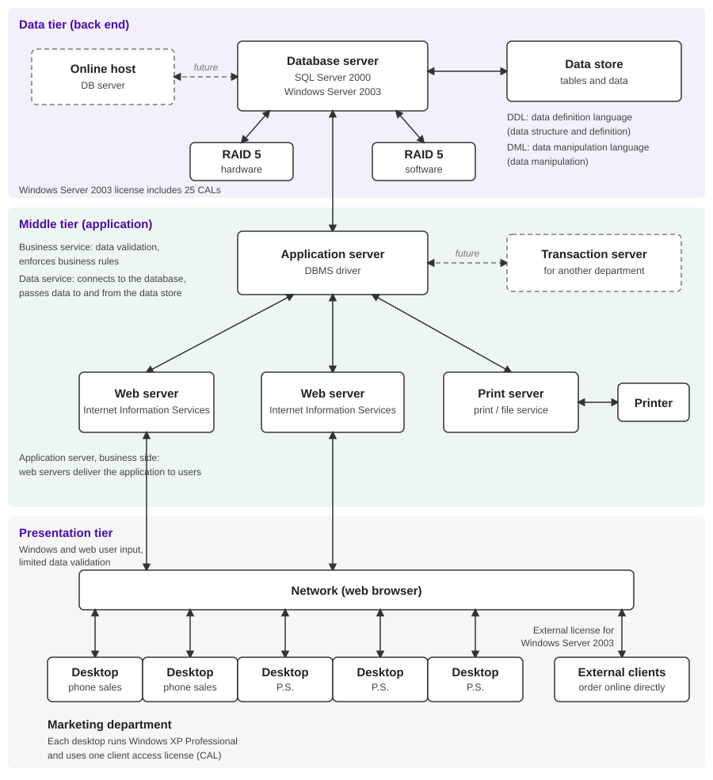

Introduction
Welcome! I'm Sharon Kuan. I enjoy helping organizations recognize useful opportunities, connect people and processes, and turn ideas into practical value.
As a Quality Assurance professional, I have experience in software testing, SQL validation, automation, and workflow analysis. I enjoy understanding how systems work, identifying opportunities for improvement, and helping teams translate business needs into successful technical solutions.
Professional Summary
Senior QA and UAT Specialist with experience supporting software quality through testing, validation, automation, data verification, and Agile collaboration. Passionate about understanding workflows, clarifying requirements, and ensuring business intent is accurately reflected in technical solutions.
Known for analytical thinking, systems-oriented problem solving, and the ability to bridge understanding across teams. Currently expanding technical skills through hands-on web development, GitHub projects, modern front-end technologies, and AI-assisted software development.
Evidence of How I Think
The same pattern appears across 25+ years of recommendations, coursework, and colleague feedback: understand how people and systems really work, find the gaps, turn needs into practical solutions, and improve the process instead of just following it.
Logistics and operations 1980s to 2002
- As operations manager, helped open a logistics company's Seattle branch. My former president wrote that the business would have been impossible without my contributions.
- Designed the drop-ship and distribution process for a client, helping reduce overall costs and improve customer service.
- Built supply chain relationships and handled time-sensitive shipments for importers and clients.
Systems and database studies 2002 to 2005
- Graduated in 2005 with an Associate degree in Database Administration from Bellevue College, with a 3.96 GPA.
- Ranked among the top students in the Database Administration program, per my instructor.
- A classmate wrote that our Systems Analysis project would not have been completed without my input.
- Built a user workflow from interviews about how work was actually done, instead of relying only on documented procedures.
- Built an invoice system in Excel for a moving company as my final project. It calculated hours times the hourly rate, mileage times the cost per mile, and any special charges into a total, and produced invoices with the company header and bill-to details. This reduced manual calculation errors. The client told me it also saved the cost of buying generic invoice forms and the time spent stamping the company header on each one. The company used it in its business until it closed, and my instructor said in class that it was marketable.
-
Designed a three-tier architecture for a marketing department: a
SQL Server 2000 database on Windows Server 2003 with RAID 5, an
application server handling data validation and business rules,
web and print servers, and desktop and online client access.
Planned for future growth and Windows licensing (CALs).

Digital redraw of my hand-drawn architecture model from a Bellevue College database course. See the original hand-drawn version.
Note: This architecture began as a hand-drawn proposal created during my Bellevue College Database Administration studies. The project explored how users, applications, databases, reporting, and future growth could work together as a complete system.
Software quality and automation 2010s to today
- Colleagues describe me finding edge cases and data anomalies others missed, and owning some of the team's most complex processes.
- Designed and built an Enterprise Test Automation Framework, a data Extractor, and a Validator tool.
- Used AI-assisted development to build a more flexible Playwright framework and stronger build validation.
- My manager noted I turn ambiguous requirements into clear test strategies and reliable automation.
The industries, tools, and job titles changed. The thinking pattern stayed consistent.